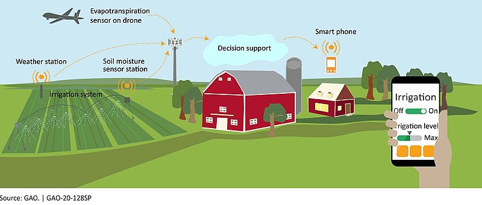
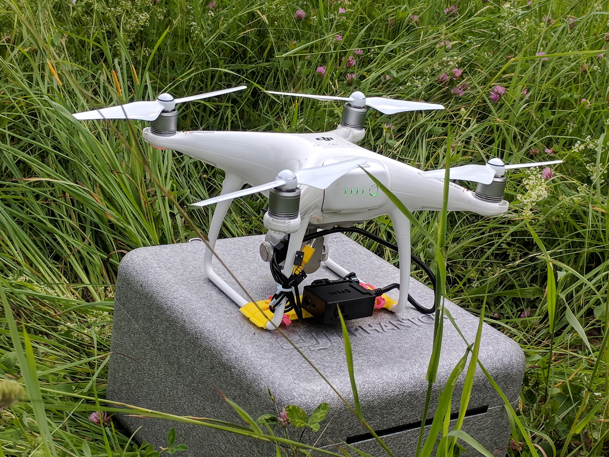
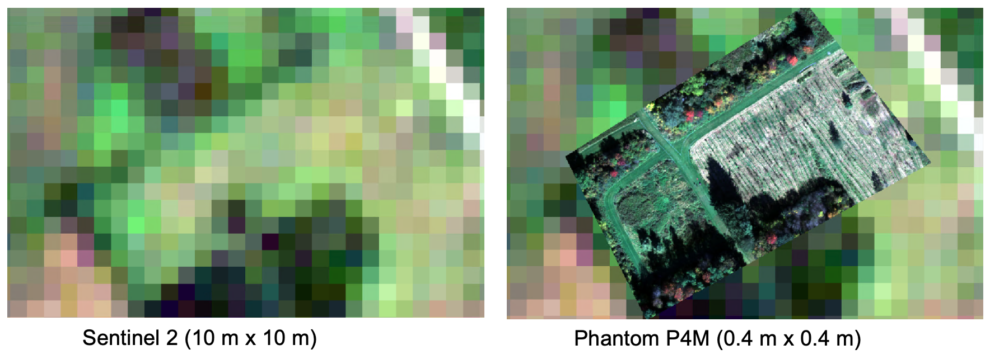
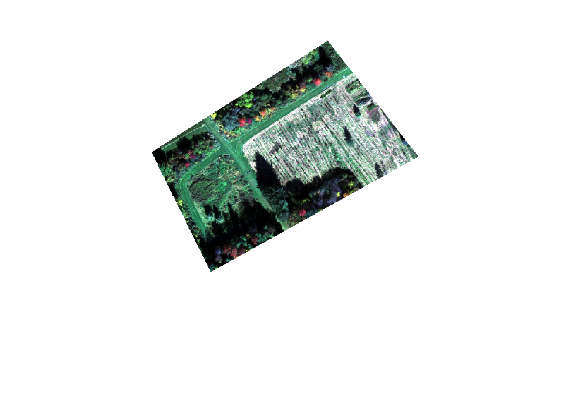
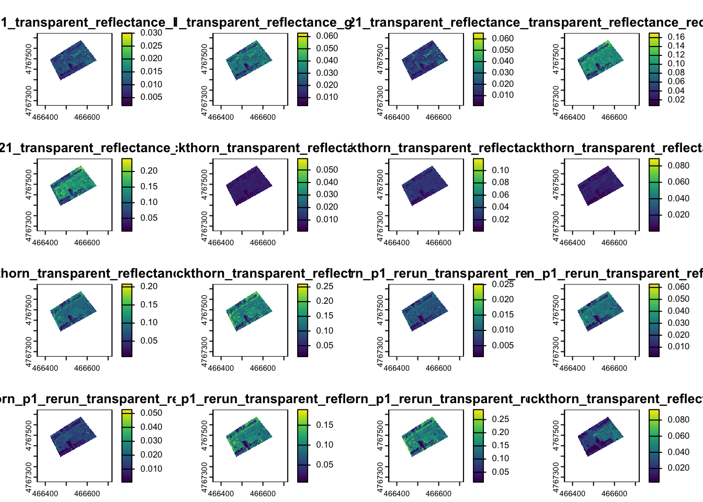
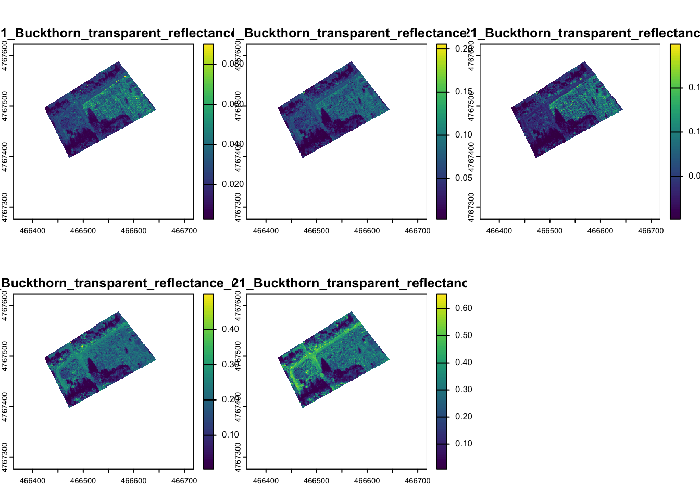
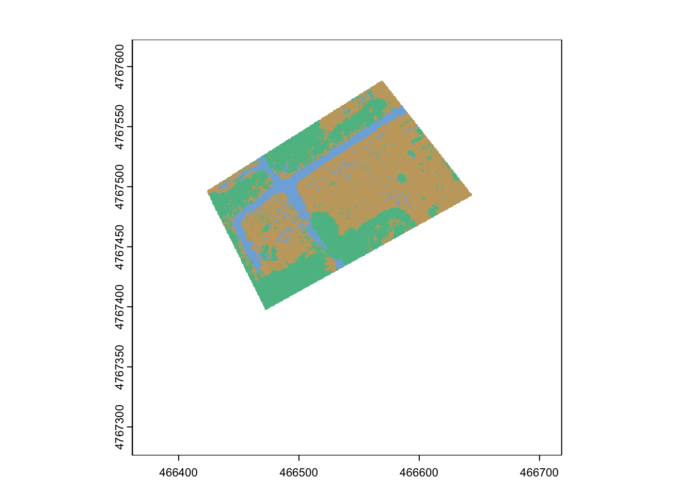
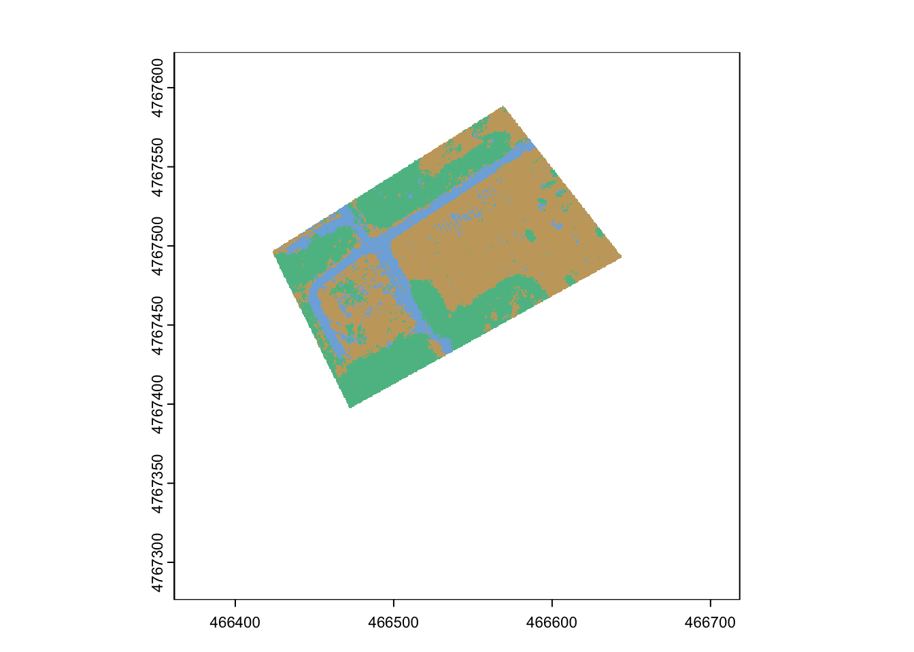
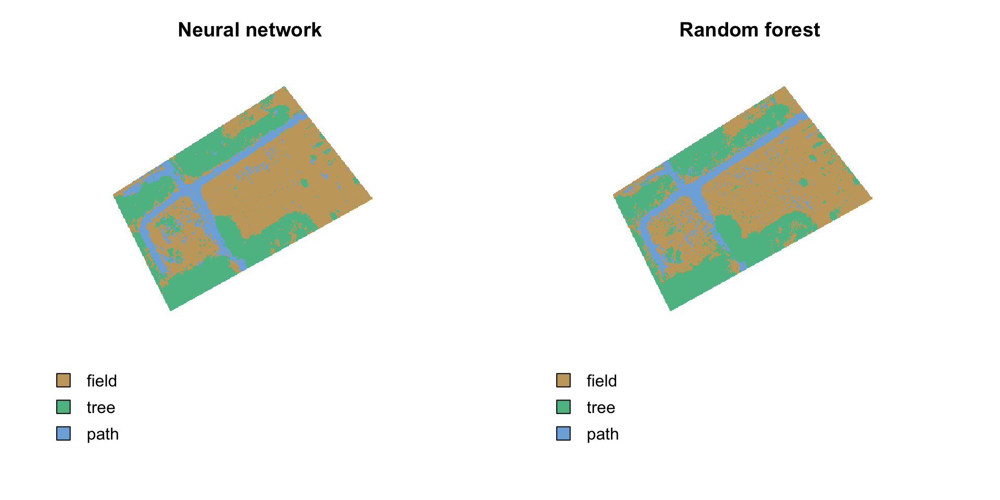

Chapter 9 Classifying landcover. An introduction to machine learning in R.
by Heather Kropp for ENVST 325: Introduction to Environmental Data Science Hamilton College
9.1 Learning objectives
- Implement random forest and neural networks in R
- Assess predictions from machine learning
- Work with drone imagery
9.3 The problem: Precision mapping from drones.
Agriculture often involves making complex decisions around when and where to plant crops, what types of crops to plan, and timing and amount of irrigation, pesticides, herbicides, and fertilizers. Farmers must often balance the crop yield with the economic considerations of the costs, subsidies, market, and profit margins of their crops. Forests also can be actively managed for many purposes including timber harvests, aesthetics, and recreation. Precision agriculture and forestry involve managing crops and forests using data and predictions that are specialized for within an agricultural field or forest stand. This type of approach develops specialized management plans and solutions that will be more cost efficient, lead to higher yield/productivity, and can have a better environmental impact. For example, irrigating crops only when additional water is necessary can reduce water consumption or applying smaller, more targeted amounts of fertilizer can reduce runoff pollution and decrease costs. In forestry, regrowth and harvesting can be targeted to species and locations with optimal conditions. Precision approaches to forestry and agriculture use high spatial resolution data over small scales (field/forest) using sensors and remote sensing. The diagram below illustrates the data streams that can go into precision management of irrigation amounts.

Source: U.S. Government Accountability Office from Washington DC. Public DomainRemote sensing observations that can image land at the meter or centimeter scales can provide detailed information about the plant growth and water stress in the field or forest. Drones aka small Uncrewed Aerial Systems (sUAS) are becoming increasing common ways to image the land surface at high resolution over small scales (< 1 \(km^2\)) with low cost systems and photogrammetry software that combines individual images into maps. Most hobby drones can generate high resolution images in red, green, blue wavelengths of light. Advanced research set ups allow for images of additional wavelengths including red-edge, near infrared, and far infrared (thermal).

Source: A hobby drone that includes a mounted thermal camera
Maps created by drone imagery allow for characterization of fields and forests on the sub-meter scale, enhancing the reach of precision agriculture and forestry. A comparison between drone data and some of the highest resolution, freely available satellite data (Sentinel 2, 10x10 meter pixels), demonstrates the differences in characterizing the land surface:

Source: A comparison of Sentinel 2 satellite imagery to imagery from a drone (Phantom P4M)
9.3.1 The data:
Hamilton College is currently reforesting fields that were originally leased for agriculture or used as a golf course. The college is also exploring the carbon held in existing forests and weighing forest management plans that optimize forest carbon stores.
In this exercise, you will assist in mapping fields that are slated for reforestation in addition to existing forest and recreational use. You will quantify the area of the fields that can potentially be converted to forest land cover.
There are four periods of drone measurements from 2021 that will use to create a map of a field undergoing reforestation. Drone measurements were taken with a DJI Phantom P4M and images include measurements in the blue (band 1), green (band 2), red (band 3), red edge (band 4), and near infrared (band 5) wavelengths. You will work with maps from spatial
The college would like to know how large the field is for planning seedling density and the potential future carbon sequestration potential.
You will need to load in the spatial package, terra, from the previous chapter to read in the drone data. You will also need packages that include functions for implementing the machine learning approaches we will use. The caret package has functions that help train and evaluate the machine learning models and the randomForest package includes a function for the random forest algorithm.
In the activity folder, you will find four tif files, each named with the date of the flight, and a shapefile of points that contain an identified land cover for each location and a label that was randomly selected to act as training or validation data. Let’s look at one of the drone flights that was taken in October:
When you plot out all of the images, you will see the values are on a scale from 0-1 and are the actual reflectance for each band.

You can also make a true color plot of the image. Note that R automatically rescales the resolution of each plot to only show 500,000 pixels on your plot. This is a little lower resolution than the actual data. Changing this setting would unnecessarily use computational resources and slow down your work.

We will want to use all four maps to make inferences about landcover. Let’s read all four images into one stack for a total of 20 bands:
drStack <- terra::rast(c("/cloud/project/activity08/May_19.tif",
"/cloud/project/activity08/June_10.tif",
"/cloud/project/activity08/June_18.tif",
"/cloud/project/activity08/Oct_12.tif"))You can preview up to 16 of the images by running the plot function:

You can also subset specific bands

Finally, you will want to read in the points with known landcover classes.
ID landcover LCID train
1 1 field 1 train
2 2 field 1 valid
3 3 field 1 train
4 4 field 1 train
5 5 field 1 valid
6 6 field 1 validYou can see that each point comes with a data table that gives a land cover class name landcover, a numerical id for land cover class LCID, and an indication if it is for training or validation (train = train or valid).
You can also view a map of both the points and the images:
# plot the main reforestation field and surrounding areas:
terra::plotRGB(oct, r=3,g=2,b=1, stretch="lin")
# add the known land cover points to the RGB plot
terra::plot(lc,"LCID", add=TRUE, legend=FALSE,
pch=19,cex=0.5, # make small filled in points
col= hcl.colors(3, palette = "Harmonic")) # colors from a color palette
# make a legend
legend("bottomright",
c("field", "path", "tree"), #add legend names
pch=19, pt.cex=0.5, #make small filled in points
col=hcl.colors(3, palette = "Harmonic"), # color palette
bty="n")
There are over 700,000 pixels in this small area and classifying the landcover by hand drawing it would be tedious. You can check by looking at the rows and columns in the raster stack:
class : SpatRaster
size : 871, 898, 20 (nrow, ncol, nlyr)
resolution : 0.39744, 0.39744 (x, y)
extent : 466361.5, 466718.4, 4767276, 4767622 (xmin, xmax, ymin, ymax)
coord. ref. : WGS 84 / UTM zone 18N (EPSG:32618)
sources : May_19.tif (5 layers)
June_10.tif (5 layers)
June_18.tif (5 layers)
Oct_12.tif (5 layers)
names : 05_19~_blue, 05_19~green, 05_19~e_red, 05_19~ edge, 05_19~e_nir, 06_10~_blue, ...
min values : 0.001844007, 0.003019887, 0.0008492318, 0.006385213, 0.008525908, 0.001167096, ...
max values : 0.033762626, 0.069434524, 0.0868719965, 0.208681837, 0.275825411, 0.059059769, ... Designating landcover without a predictive approach would involve tracing every individual tree in the field and the outline of all paths, fields, and forests. This would be tedious work for even an image this small and impossible in many real world applications. However, it would be helpful to know the total area of unforested fields and the area designated to trails. In the next section you work on generating these classifications.
9.4 The approach: classification with machine learning
9.4.1 Training data
We will use two common types of machine learning approaches used for remote sensing: Neural Networks and Random Forest. We’ll compare how these methods make predictions and learn about the packages that run them.
Now that you have the data read in, it is time to classify every pixel. You will need to pull out the reflectance data from every image for each point of known land cover:
# subset to only focus on training pts (60 in each class)
trainPts <- subset(lc, lc$train=="train", drop=FALSE)Then we need to extract the pixel values from our stack:
9.4.2 Training random forest
You will start with classification using the random forest method. There is a chapter of a brief overview posted in Blackboard. This method can be used for classifications or continuous predictions. This method works well with data with a large number of features, generally performs well, and it can handle noisy data. However, tuning the model to the data can not always be straightforward. This is a commonly used prediction method for remotely sensed data.
For both methods (random forests and neural networks) today, we will use the caret package to help tune the parameters. The data folder also contains an overview of caret and parameter tuning in the caret.pdf file. For many machine learning methods, there are often parameters that need to be set to help configure the models and you can often choose from a range of values for parameters depending on the method you are using. Finding the parameter values that will work best for predictions can involve a lot of trial and error and setting arbitrary values. The Caret pacakge helps streamline this part of the model training process by finding the optimal parameter settings within a range of values. We will use caret to find the optimal parameter setting for our random forest predictions. Here we will use a repeated ** cross-validation** approach discussed in class. This will allow us to quickly assess the optimal parameter settings to increase the accuracy of the algorithm.
#Kfold cross validation
tc <- trainControl(method = "repeatedcv", # repeated cross-validation of the training data
number = 10, # number 10 fold
repeats = 10) # number of repeats
###random forests
#Typically square root of number of variables
nbands <- 20 #20 bands of information
rf.grid <- expand.grid(mtry=1:round(sqrt(nbands))) # number of variables available for splitting at each tree nodeHere train control indicates how we want to set up our parameter tuning. We are using a repeated cross valdiation method. We also need to indicate the values to check for our random forests. You can see in the table below, there is one parameter we can tune in random forests:
Here train control indicates how we want to set up our parameter tuning. We are using a repeated cross valdiation method. We also need to indicate the values to test for the parameter(s) of the chosen model. You can see in the table below, there is one parameter we can tune in random forests:
|_________________|_________________|____________| |Random forests | rf | mtry | |Neural network | nnet| size, decay|
For random forests, there is one parameter that can be tuned in caret: mtry. This describes the number of variables sampled as candidates in splitting the decision trees that go into this method. Typically the default value for classification is the square root of the number of variables in the data (here we have 20 bands of the electromagnetic spectrum so we have 20 variables). However, you could also choose a value that is less than that (1 or 2 or 3 so we will tune the model over this grid of options. Now that we’ve set up this tuning we will train the model with our training data through the caret package.
Anytime you are working data that involves the random generation of numbers, it is good to set a random seed. This allows for reproducibility in your script and will generate random numbers in the same way everytime you run your script. You can set your seed to be any number you like. Note that this only works if you run your script in the same order every time and don’t rerun a random number function over and over again in your console within the same session. If you want to ensure that any vector of random numbers is exactly the same every time, it is always good to set the seed before each individual vector. Here, we’ll set the seed at the beginning and if you always run these vectors in exactly this order the samples will be the same every time.
# set random seed for algorithm so you can get the same results when
# running multiple times
set.seed(43)
#note that caret:: will make sure we use train from the caret package
rf_model <- caret::train(x = trainDF[,3:22], #digital number data
y = as.factor(trainDF[,1]), #land class we want to predict
method = "rf", #use random forest
metric="Accuracy", #assess by accuracy
trainControl = tc, #use parameter tuning method
tuneGrid = rf.grid) #parameter tYou can view the final model configuration and the training by typing in the name or the model or plotting it:
Random Forest
180 samples
20 predictor
3 classes: '1', '2', '3'
No pre-processing
Resampling: Bootstrapped (25 reps)
Summary of sample sizes: 180, 180, 180, 180, 180, 180, ...
Resampling results across tuning parameters:
mtry Accuracy Kappa
1 0.8942546 0.8404024
2 0.8953490 0.8419261
3 0.8978143 0.8455578
4 0.8928799 0.8381505
Accuracy was used to select the optimal model using the largest value.
The final value used for the model was mtry = 3.This process might take a minute to run on your computer. Once it finishes you can see the model checked accuracy and Kappa. Kappa is similar to accuracy but accounts for the level of accuracy that we might see just by random chance.
9.4.3 Predictions and validation
Now that you have trained the model, you can make predictions for the entire raster of observations.
#use the model to predict land cover class for the entire raster stack
rf_prediction <- terra::predict(drStack, model=rf_model, na.rm=TRUE )
# plot the land cover class (uses LCID number)
terra::plot(rf_prediction, col= hcl.colors(3, palette = "Harmonic"), legend=FALSE)
You can see the prediction looks good initially. There might be some field marked as path or trees, but let’s look at the validation points to assess this more formally:
# subset land cover points for validation
validPts <- subset(lc, lc$train=="valid", drop=FALSE)
# convert to data frame
valid_Table <- values(validPts)
# extract predicted land cover for each point
valid_rf <- terra::extract(rf_prediction, validPts)
# turn into table
validDF_rf <- data.frame(y=valid_Table$LCID, rf=valid_rf)You are ready to compare the predictions to the observed data. You will set up a confusion matrix to compare the observations to the predictions. The confusionMatrix function in the caret package simply needs a vector of predictions and a vector of known data.
# make a confusion matrix
# LCID 1 = field
# LCID 2 = tree
# LCID 3 = path
# confusion Matrix, first argument is prediction second is data
rf_errorM = confusionMatrix(as.factor(validDF_rf$rf.class),as.factor(validDF_rf$y))
# make LCID easier to interpret
colnames(rf_errorM$table) <- c("field","tree","path")
rownames(rf_errorM$table) <- c("field","tree","path")
rf_errorMConfusion Matrix and Statistics
Reference
Prediction field tree path
field 55 4 6
tree 4 56 2
path 1 0 52
Overall Statistics
Accuracy : 0.9056
95% CI : (0.8531, 0.944)
No Information Rate : 0.3333
P-Value [Acc > NIR] : <2e-16
Kappa : 0.8583
Mcnemar's Test P-Value : 0.1344
Statistics by Class:
Class: 1 Class: 2 Class: 3
Sensitivity 0.9167 0.9333 0.8667
Specificity 0.9167 0.9500 0.9917
Pos Pred Value 0.8462 0.9032 0.9811
Neg Pred Value 0.9565 0.9661 0.9370
Prevalence 0.3333 0.3333 0.3333
Detection Rate 0.3056 0.3111 0.2889
Detection Prevalence 0.3611 0.3444 0.2944
Balanced Accuracy 0.9167 0.9417 0.92929.4.4 Classification with Neural Network
Now you will compare your random forest predictions to another common approach, neural networks. Neural networks can be used for classification or numerical predictions. Neural networks are often successful at classifications without needing to make a lot of assumptions about the data and capable of detecting complex patterns. However, this method can also be computationally intensive and prone to overfitting. Small training data sets may also cause issues in training and prediciton. First you’ll set up the parameter tuning in caret. You will fit the nnet function. This requires parameters size (number of nodes) of the hidden layer in your network topology. You will also need to specify the decay parameter will be used to prevent over-fitting in the model training. I’ve set up some initial parameter values that have give a good range of accuracy to start with. Running the training over a large range of values would be too time consuming and computationally intensive for this class:
# starting parameters for neural net
nnet.grid <- expand.grid(size = seq(from = 1, to = 10, by = 1), # number of neurons units in the hidden layer
decay = seq(from = 0.001, to = 0.01, by = 0.001)) # regularization parameter to avoid over-fitting Now you are ready to train the model:
# train nnet
set.seed(18)
nnet_model <- caret::train(x = trainDF[,c(3:22)], y = as.factor(trainDF[,1]),
method = "nnet", metric="Accuracy",
trainControl = tc, tuneGrid = nnet.grid,
trace=FALSE)
nnet_modelNeural Network
180 samples
20 predictor
3 classes: '1', '2', '3'
No pre-processing
Resampling: Bootstrapped (25 reps)
Summary of sample sizes: 180, 180, 180, 180, 180, 180, ...
Resampling results across tuning parameters:
size decay Accuracy Kappa
1 0.001 0.7669320 0.6494788
1 0.002 0.7705697 0.6547423
1 0.003 0.7684918 0.6519478
1 0.004 0.7658218 0.6479748
1 0.005 0.7655461 0.6479222
1 0.006 0.7607964 0.6403669
1 0.007 0.7708057 0.6553481
1 0.008 0.7693564 0.6534978
1 0.009 0.7635046 0.6450295
1 0.010 0.7546671 0.6315590
2 0.001 0.8945307 0.8405355
2 0.002 0.9060562 0.8579915
2 0.003 0.8837289 0.8242405
2 0.004 0.9044086 0.8551547
2 0.005 0.9027526 0.8528031
2 0.006 0.8909606 0.8348028
2 0.007 0.8896277 0.8328439
2 0.008 0.8935069 0.8387879
2 0.009 0.8872999 0.8294753
2 0.010 0.8890911 0.8320175
3 0.001 0.9069459 0.8591264
3 0.002 0.8986587 0.8466578
3 0.003 0.8991741 0.8473419
3 0.004 0.8959349 0.8424144
3 0.005 0.8881893 0.8307919
3 0.006 0.8904261 0.8339530
3 0.007 0.8887223 0.8315091
3 0.008 0.8876781 0.8300018
3 0.009 0.8866189 0.8283769
3 0.010 0.8851751 0.8261128
4 0.001 0.8928359 0.8377489
4 0.002 0.8963700 0.8431344
4 0.003 0.8840533 0.8244595
4 0.004 0.8901031 0.8338331
4 0.005 0.8836246 0.8238692
4 0.006 0.8817641 0.8209995
4 0.007 0.8802672 0.8187068
4 0.008 0.8833371 0.8233519
4 0.009 0.8867149 0.8283970
4 0.010 0.8820137 0.8213646
5 0.001 0.8923930 0.8372613
5 0.002 0.8904790 0.8343772
5 0.003 0.8877666 0.8300645
5 0.004 0.8871526 0.8292075
5 0.005 0.8781336 0.8155525
5 0.006 0.8819028 0.8212893
5 0.007 0.8828010 0.8225051
5 0.008 0.8846215 0.8251831
5 0.009 0.8788183 0.8167970
5 0.010 0.8807998 0.8196006
6 0.001 0.8837848 0.8241331
6 0.002 0.8813240 0.8204809
6 0.003 0.8840551 0.8245499
6 0.004 0.8876250 0.8296604
6 0.005 0.8804727 0.8189611
6 0.006 0.8838883 0.8242250
6 0.007 0.8751526 0.8110764
6 0.008 0.8766144 0.8134201
6 0.009 0.8796798 0.8179772
6 0.010 0.8773623 0.8143512
7 0.001 0.8847371 0.8253976
7 0.002 0.8836011 0.8241692
7 0.003 0.8824467 0.8220234
7 0.004 0.8810286 0.8199220
7 0.005 0.8796822 0.8178997
7 0.006 0.8832563 0.8232853
7 0.007 0.8791390 0.8172279
7 0.008 0.8810429 0.8199305
7 0.009 0.8789246 0.8168102
7 0.010 0.8783997 0.8158543
8 0.001 0.8831795 0.8230880
8 0.002 0.8818867 0.8213338
8 0.003 0.8848418 0.8257639
8 0.004 0.8831730 0.8233210
8 0.005 0.8828133 0.8225905
8 0.006 0.8821062 0.8215421
8 0.007 0.8755654 0.8115477
8 0.008 0.8753746 0.8114230
8 0.009 0.8783898 0.8159145
8 0.010 0.8802974 0.8186818
9 0.001 0.8801785 0.8186850
9 0.002 0.8795583 0.8176882
9 0.003 0.8842466 0.8246332
9 0.004 0.8850415 0.8259061
9 0.005 0.8844576 0.8250482
9 0.006 0.8844494 0.8251362
9 0.007 0.8786993 0.8162619
9 0.008 0.8773303 0.8144103
9 0.009 0.8808591 0.8197281
9 0.010 0.8778107 0.8149271
10 0.001 0.8748647 0.8105828
10 0.002 0.8807259 0.8196150
10 0.003 0.8852690 0.8262164
10 0.004 0.8884426 0.8310893
10 0.005 0.8831182 0.8230461
10 0.006 0.8767716 0.8136272
10 0.007 0.8801925 0.8187101
10 0.008 0.8785652 0.8160504
10 0.009 0.8793741 0.8173574
10 0.010 0.8795329 0.8177303
Accuracy was used to select the optimal model using the largest value.
The final values used for the model were size = 3 and decay = 0.001.A note: you will see a lot of print out if trace=TRUE is specified as the parameter tuning is done throughout the grid. This can be used to identify that you are running enough iterations and provide you with more information. You can find out more by printing out the results by changing this argument to FALSE.
Make predictions for the entire image and view:
# predictions
nn_prediction <- terra::predict(drStack, nnet_model)
# map
terra::plot(nn_prediction, col= hcl.colors(3, palette = "Harmonic"), legend=FALSE)
9.5 Analyzing predictions of land cover
You set out to do this analysis to see if you could classify the area of fields, paths, and forests. Now let’s assess the conclusions and potential bias in interpreting these classifications. Let’s start by comparing the area of land predicted to be an algal bloom. You can check the number of cells in each class using the freq function in the raster package
layer value count
1 1 1 71047
2 1 2 46013
3 1 3 18142 layer value count
1 1 1 71025
2 1 2 46822
3 1 3 17355[1] 11367.52You can also view the predictions side by side:
par(mfrow=c(1,2))
terra::plot(nn_prediction, col= hcl.colors(3, palette = "Harmonic"),
legend=FALSE, axes=FALSE, main="Neural network", box=FALSE)
legend("bottomleft", c("field","tree","path"),
fill=hcl.colors(3, palette = "Harmonic") ,bty="n")
terra::plot(rf_prediction, col= hcl.colors(3, palette = "Harmonic"),
legend=FALSE, axes=FALSE, main="Random forest", box=FALSE)
legend("bottomleft", c("field","tree","path"),
fill=hcl.colors(3, palette = "Harmonic") ,bty="n")
9.6 Conclusions
In your homework, you will practice comparing predictions and implementing these algorithms. You can see from the tutorial that both algorithms predicted a similar area of field (roughly 11,360 \(m^2\)). Our image focused on this area, so it is not surprising that there are more pixels in fields than paths or forests. However this map could serve as a basis for tracking the regrowth of trees in the field or be entered into calculations projecting future additional forested areas for future carbon calculations.